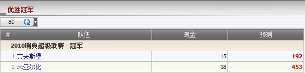

优胜冠军
定义:
显示现金为总代理基于占成数的输赢, 及显示预测为总代理对于每个投注可能的输额若会员赢了该投注。

图 1.1
- 从上图中, 让我们选取 联赛2010瑞典超级联赛 - 冠军 作为例子以理解这份报告。
- 总代理基于占成数对于艾夫斯堡和米亚尔比可能会赢得的总现金 = 15 + 18 = 33
- 1 艾夫斯堡: 会员投注额 = 50, 赔率 = 15, 总代理占成 is 30%。
--> 现金 = 投注额 * 总代理占成 = 50 * 30% = 15
--> 预测 = 总现金 - 本金 * 投注额 * 总代理占成 = 33 - 50 * 15 * 30% = -192
这意味着总代理将会输 192.
- 2 米亚尔比: 会员投注额 = 60, 赔率 = 27, 总代理占成是30%。
--> 现金 = 投注额 * 总代理占成 = 60 * 30%= 18
--> 预测 = 总现金 - 本金 * 赔率 * 总代理占成 = 33 - 60 * 27 * 30% = -453
这意味着总代理将会输 453.